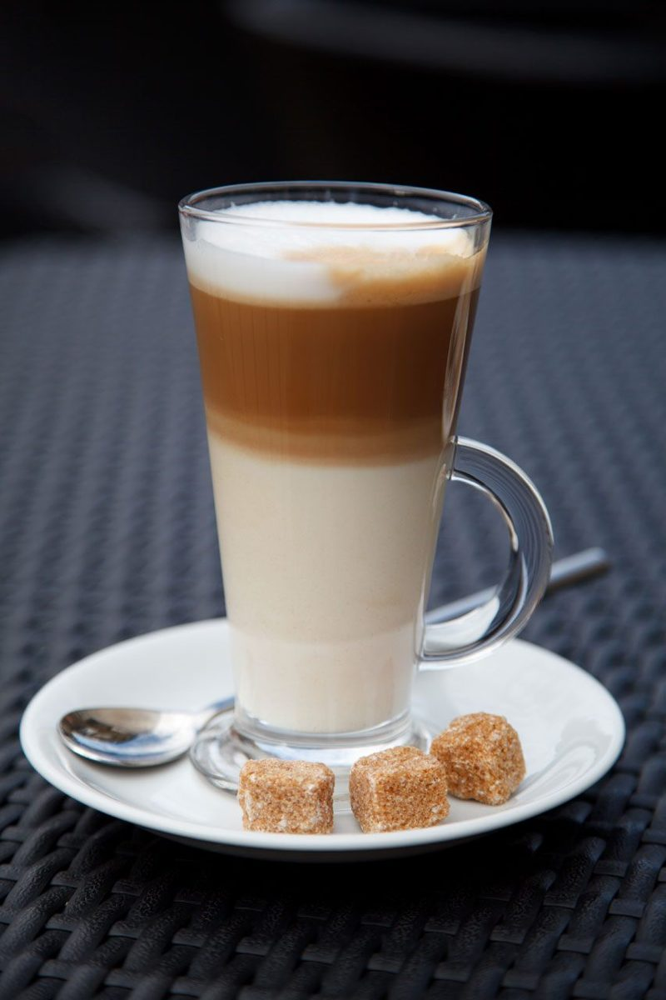

3つの正方形
1、4、9。



写真は錦町の風景でもお店のものでもありません。国外または撮影地不明のフリー素材です。
制作側の連想
住所の数字から考えたこと
所在地の「1丁目4-9」を見て、制作側は 1、4、9 が 1×1、2×2、3×3 の面積(平方数)に並ぶことに気づきました。それならこのページは、大きさの違う三種類の正方形で組んでみよう、というのが今回の発想です。制作側の連想で、お店の理念・由来とは無関係です。店名の意味や、お店についての説明ではありません。
3つの正方形

写真は錦町の風景でもお店のものでもありません。国外または撮影地不明のフリー素材です。
制作側の連想
所在地の「1丁目4-9」を見て、制作側は 1、4、9 が 1×1、2×2、3×3 の面積(平方数)に並ぶことに気づきました。それならこのページは、大きさの違う三種類の正方形で組んでみよう、というのが今回の発想です。制作側の連想で、お店の理念・由来とは無関係です。店名の意味や、お店についての説明ではありません。